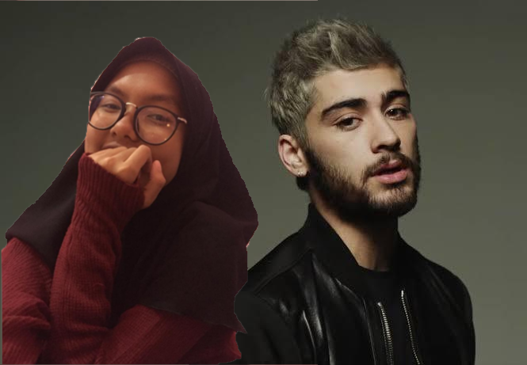
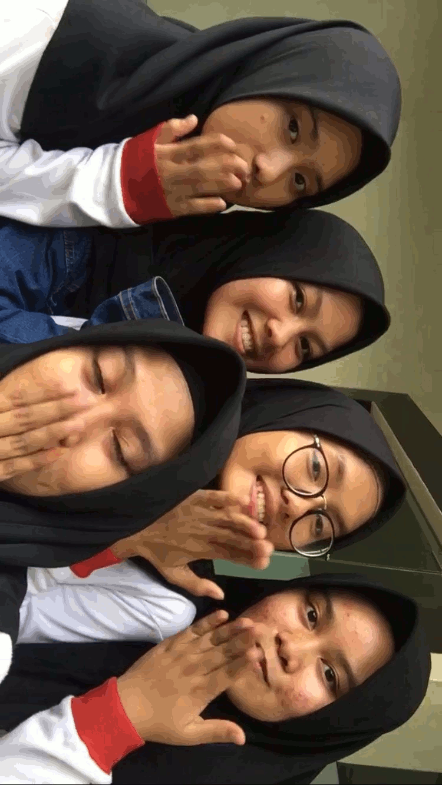
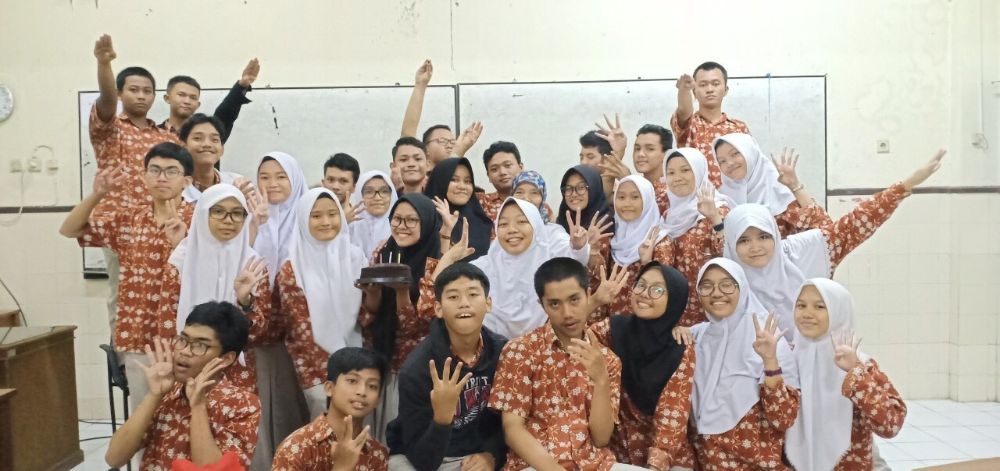
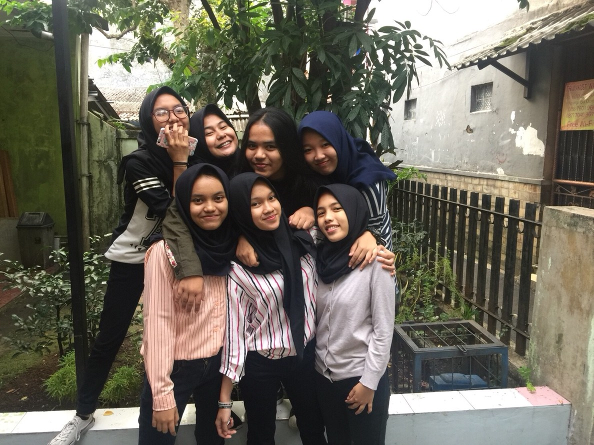
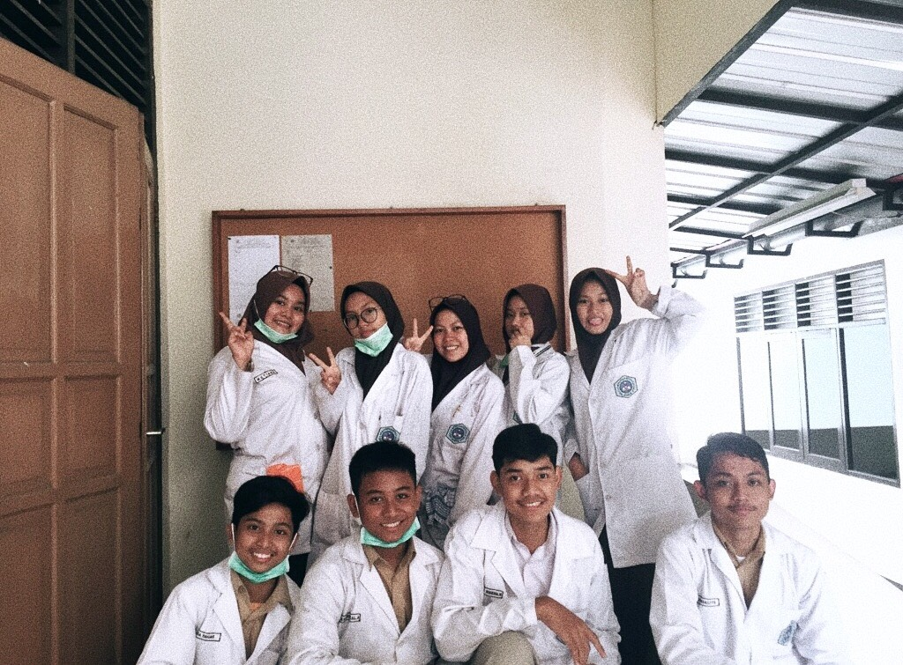

Hello everyone! Nama aku Najwa P. Nayanda, you can call me awa. Aku lahir di Tangerang, 29 Oktober 2002. Jadi, umurku sekarang 16tahun. Aku besar di Bogor dari aku tk sampai sekarang, walaupun mama sudah pindah ke Tangerang. That's why sekarang aku ngekos di Wisma Jihan Ciheuleut.
So, lemme introduce him. his name is Zayn Malik. One of the member of One Direction. fyi, 1D udah bubar sekarang. So, dia solo karir sekarng. Have a lots of song, for example let me and dusk till dawn. Not really my idol, but still i like him. 
Hobiku mendengarkan musik, aku bisa ngabisin waktu seharian penuh buat dengerin musik. I love khalid's song!!!!! better is a good choce to listen, and also Billie Ellish. Setiap pagi dengerin lagu from Youtube, Joox gabegitu lengkap so, yeah utube.
They are my fwend from another class. Jadi dulu kan 11.4 ya, ini temen temen support system buat setangah tahun belakangan ini. Ada hilma, rahel, muti, jara. evethough, jara masi tetep sekelas juga sampai sekarang. 
Like i said before, awalnya aku kelas 11.4 and its such a nice class. Banyak banget temen yang asik parah, walaupun masih ada kubu kubu, like me he. 
Want to know my support system from 10 grade? Here. Ada ara, ata, paija, pebril, denis, putri. Dari kelas 10 sampai seekarang, and i love them. 
Jadi di 11.4 aku temenan sama mereka, yang setiap halnya tuh ngajak kebaikan. Ada aja niat bantu orang, temen sekelas, dll. there are kiky, rahel, hilma, jara, muti, muksit, bogel, alul 
You can also contact me on instagram @najwanayanda, and you can give me a message about me or my blog down below